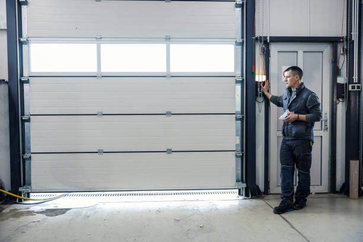
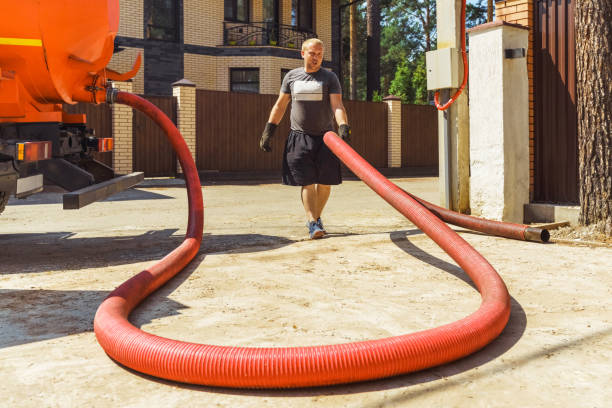
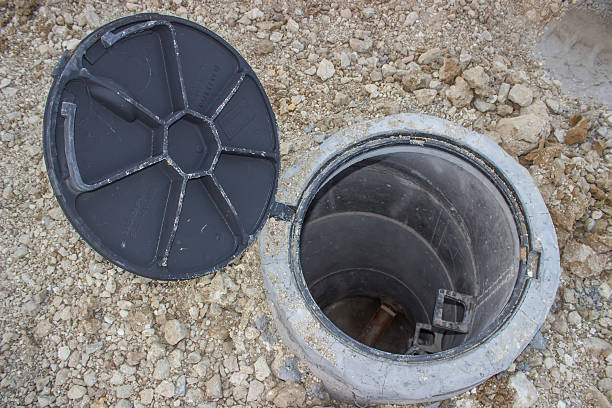
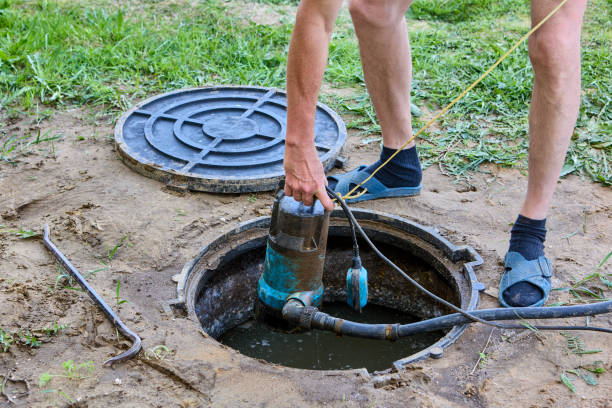
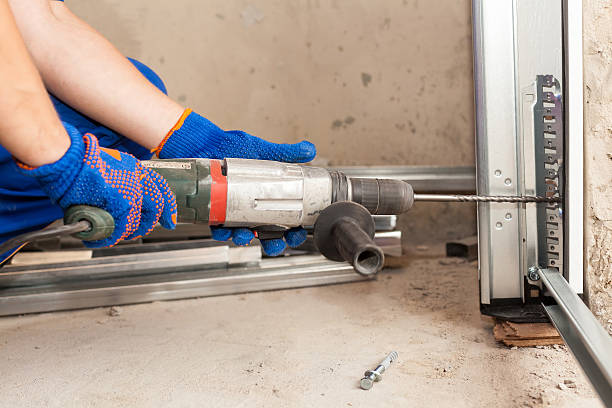

USA - Nationwide
info@asapstatewideseptic.pro
USA - Nationwide
info@asapstatewideseptic.pro

Running a business requires reliable septic systems. Our commercial septic services cover installation, maintenance, and repairs tailored for businesses of all sizes.
Keep your business running smoothly with our comprehensive commercial septic services. We cater to the unique demands of businesses in Usa - Nationwide to ensure compliance and efficiency.
Residential & commercial septic service
Quality services at affordable prices
Immediate 24/ 7 emergency services


In today's world, ensuring your home's waste management system operates efficiently is critical for a clean and healthy living environment. At septic service, we specialize in providing top-notch residential septic services . Our team of experienced professionals has the knowledge and tools to handle all aspects of septic system management, including installation, repair, maintenance, and inspection.
Investing in regular septic services not only guarantees the longevity of your system but also prevents potential health hazards associated with malfunctioning systems. From conducting thorough inspections to scheduling regular cleanings, our proactive approach helps homeowners avoid costly repairs. With our expertise in the latest technologies and techniques, you can rest assured your septic system will be in the best possible hands.
Customer satisfaction is our top priority. We pride ourselves on our transparent pricing, exceptional customer service, and commitment to eco-friendly practices. Choose septic service for your residential septic needs, and experience the peace of mind that comes with a dependable waste management system.

When it comes to septic tank installation, choosing the right provider can make all the difference. At septic service, we specialize in professional septic tank installations that adhere to local regulations and environmental standards. Our experienced technicians meticulously assess your property to recommend the best septic system solution for your needs. Our commitment to quality means you receive a durable, efficient system designed for longevity and reliability. By opting for our services, you're not just getting a septic installation; you're ensuring a sustainable waste management solution for your home.

Is your septic tank showing signs of trouble? Ignoring minor issues can lead to significant problems and costly repairs down the line. At septic service, we offer expert septic tank repair services in Usa - Nationwide and are dedicated to restoring your system to optimal performance levels.
Our experienced technicians are equipped to diagnose and resolve a variety of septic tank issues, including leaks, clogs, and unexpected backups. We use advanced tools and techniques to provide lasting solutions that safeguard your property and the environment. Our prompt and efficient service minimizes inconvenience, allowing you to get back to your routine with confidence in a well-functioning septic system.

Regular septic tank pumping is essential for preventing backups and maintaining system efficiency. At septic service, we provide thorough septic tank pumping services that help extend the life of your system. Our trained technicians follow a detailed pumping process that ensures every inch of your tank is effectively cleared of sludge and solid waste. We advise our customers on the appropriate pumping schedule based on their system usage and local guidelines. By choosing us, you're taking proactive steps toward a healthy and functioning septic system.

Maintaining a clean septic tank is crucial for the overall health of your system. At septic service, we offer comprehensive septic tank cleaning and maintenance services that keep your system running smoothly. Our team employs specialized equipment to clean your tank and eliminate any buildup that could lead to future problems. We also provide insightful maintenance tips to help you prolong the lifespan of your system. With our reliable services, you can enjoy worry-free operation of your septic system for years to come.

Regular septic system inspections are crucial for early detection of potential issues that can spiral into costly repairs if not addressed promptly. Our septic system inspection services are thorough and meticulous, employing cutting-edge technology to evaluate your system’s health.
Why choose us? Our team pays attention to every detail during inspections—including tank conditions, drain field integrity, and baffle health. This allows us to provide comprehensive reports and recommendations that are easy to understand. Safe, reliable, and efficient services are what we aim to deliver, helping to prolong the life of your septic system.

If your septic tank is beyond repair, it may be time for a replacement. At septic service, we specialize in septic tank replacement services that minimize disruption to your property. Our knowledgeable team conducts a comprehensive evaluation to recommend the most suitable replacement options, considering your specific needs and local regulations. Our goal is to ensure you have a reliable and efficient septic system that offers long-term service. With our professional approach, we handle everything from permits to installation, ensuring a seamless transition.

If you experience slow drains or frequent backups, your septic lines may be compromised. At septic service, we specialize in septic line repair services in Usa - Nationwide, addressing common issues such as leaks, clogs, or deterioration.
Our skilled technicians utilize cutting-edge technology to diagnose and repair line issues promptly and effectively. We emphasize minimizing disruptions to your property while providing lasting solutions. Our dedication to efficient and safe repairs sets us apart as the trusted choice for septic line repair in Usa - Nationwide. Ensure the health of your septic system and the integrity of your property by choosing septic service.

If you’re experiencing septic system issues but can’t pinpoint the cause, our septic system troubleshooting services can help. Our team of experienced professionals knows how to diagnose complex problems through detailed examinations and assessments to get your system back on track.
We understand the nuances behind septic systems, which allows us to offer tailored solutions to resolve your troubles effectively. Our proactive approach ensures minimal disruption and optimal results. By choosing our troubleshooting services, you partner with a team that emphasizes transparency and communication throughout the process.

Installing a new septic system pump can improve efficiency and performance. At septic service, we specialize in septic system pump installation services that follow best practices and local regulations. Our skilled technicians assess your current system to recommend the right pump for your needs, ensuring the longevity and performance of your system. Our commitment to quality installations guarantees a seamless integration with your existing system. By choosing us, you are making a smart investment in the maintenance of your home’s waste management system.

Properly functioning pumps are vital for the effective operation of a septic system. At septic service, we offer professional septic system pump installation services tailored to the specific requirements of your property. Whether you need a new pump for an existing system or are installing a completely new septic setup, our experienced team ensures proper installation that meets industry standards.
We take the time to assess your home’s septic needs, helping you choose the right pump for your usage and soil type. Our knowledgeable technicians are trained in the latest installation techniques and comply with all local regulations, guaranteeing a smooth and compliant installation process.
Choosing septic service for your septic system pump installation ensures quality and reliability. We focus on your satisfaction and take pride in our attention to detail, ensuring your new pump operates efficiently from day one.

Installing a robust and compliant septic system is crucial for any commercial property. At septic service, we excel in commercial septic system installation in Usa - Nationwide, ensuring your business has a reliable waste management solution tailored to your needs.
Our experts conduct thorough site evaluations to determine the optimal system design that complies with local codes and regulations. We pride ourselves on using high-quality materials and advanced technologies for installations that stand the test of time. By choosing septic service, you'll benefit from our knowledge and experience, ensuring your septic system meets current standards and operates efficiently.

Installing a commercial septic system is a critical investment for any business. At septic service, we specialize in commercial septic system installation that meets the specific needs of your property and industry. Our team of licensed professionals takes into account factors like soil conditions, property size, and local regulations to recommend an effective septic solution.
Our installation process is thorough and designed to minimize disruptions to your business operations. We utilize top-grade materials and advanced techniques to ensure that your new septic system is robust and compliant from the outset.
We pride ourselves on our detailed consultations, guiding you through the entire process and answering any questions you may have. With septic service, you can rely on expert guidance to ensure your commercial septic system serves your business effectively in Usa - Nationwide.

For restaurants and commercial kitchens, proper grease trap maintenance is crucial for keeping your plumbing and septic systems functioning correctly. Our grease trap and commercial waste removal services are tailored to meet the rigorous demands of the food service industry, ensuring compliance and safeguarding your business's reputation.
By choosing our services, you benefit from our expertise in managing hazardous waste responsibly and in accordance with local regulations. We pride ourselves on delivering effective solutions to keep your systems clear and compliant, ensuring smooth operations for your business.

Designing a septic system that meets the specific needs of your business is a critical investment. At septic service, we offer professional septic system design and consultation services tailored to commercial properties.
Our team of experts collaborates with you to evaluate your waste management needs and environmental considerations. From initial assessments to designing systems that comply with local guidelines, we ensure your septic solution is efficient and reliable. Our commitment to quality service and customer satisfaction positions us as a leader in the septic industry.

Designing an efficient septic system is crucial for any commercial operation. At septic service, we offer specialized septic system design and consultation services tailored specifically for businesses. Our experienced engineers and technicians work closely with you to understand your facility’s needs, ensuring the design aligns with both operational efficiency and regulatory compliance.
Our design process considers all factors, including soil type, water usage, and waste type. We strive to deliver a system that maximizes functionality and minimizes potential environmental impacts. With a meticulous focus on detail and compliance, we ensure your new septic system meets the highest standards.
By choosing septic service for septic system design and consultation, you gain a partner committed to your success. Our professional guidance, ongoing support, and dedication to quality service position you for long-term satisfaction.

Large buildings require specialized septic systems built to handle increased waste volume. At septic service, we provide high-capacity septic systems designed for large buildings ensuring your waste management needs are met without compromising on efficiency or compliance.
Our team conducts comprehensive evaluations to determine the right system size and design tailored to your property’s requirements. We utilize advanced technologies and materials to deliver robust septic solutions that handle high volumes of waste seamlessly. Trust septic service for effective high-capacity septic systems that support your property's operational needs.

Complying with local regulations and environmental standards is essential for any commercial property. At septic service, we specialize in septic system compliance services in Usa - Nationwide, ensuring your business adheres to all necessary guidelines.
Our team conducts thorough assessments and helps you navigate compliance requirements, minimizing risk and potential fines. We stay updated on local regulations to provide businesses with the most current strategies and recommendations. Choose septic service to ensure your septic system meets compliance standards while maintaining operational efficiency.

When septic emergencies arise, prompt action is crucial for commercial operations. At septic service, we offer emergency septic services that are available 24/7 for businesses . Our fast response team is equipped to handle any septic crisis, minimizing downtime and damage to your facility. With our expertise and commitment to excellence, you can trust us to restore functionality quickly and effectively. Choose our emergency services to ensure your business stays up and running during unexpected septic issues.

Regular inspections are vital for preventing costly repairs in commercial septic systems. At septic service, we provide thorough septic system inspection services for commercial buildings, identifying potential issues before they escalate. Our skilled inspectors evaluate every aspect of your system to ensure optimal performance and compliance with local regulations. By selecting our inspection services, you're safeguarding your investments and ensuring a reliable waste management solution for your business.

Effective sewage treatment is essential for maintaining a safe and clean environment in any business. At septic service, we offer tailored sewage treatment systems for businesses in Usa - Nationwide, designed to meet the specific requirements of various industries.
Our engineered systems comply with all regulations while offering advanced treatment technologies. With a focus on efficiency and environmental responsibility, we educate businesses on best practices for managing their sewage effectively. Choose septic service for innovative sewage treatment solutions that prioritize your business needs.

At septic service, we understand that each property has unique septic needs. We provide specialized septic services in Usa - Nationwide, tailored to a variety of scenarios, ensuring each customer's needs are met.
Whether you require septic tank location services, odor control solutions, or maintenance for aerobic septic systems, our team of experts is equipped to assist you. We pride ourselves on personalized service and thorough assessments, ensuring no detail is overlooked. Contact septic service for specialized septic solutions designed just for you.

At septic service, we understand that each septic situation is unique, which is why we offer specialized septic services tailored to meet diverse needs . From design to maintenance and emergency repairs, our team is equipped with the expertise needed to handle every challenge.
Our specialized services include unique solutions like septic tank location services, odor control strategies, and rural property pumping. We believe that every property deserves a septic solution that fits its unique characteristics and challenges.
With our commitment to customer service and quality, you can count on septic service to provide specialized septic services that are not just effective but also environmentally friendly, promoting sustainability in your area.

Unpleasant odors from your septic system can indicate underlying issues. At septic service, we offer effective septic tank odor control solutions that address the root causes of odors. Our expert technicians conduct thorough assessments to identify and rectify issues that contribute to foul smells, ensuring a more pleasant environment around your property. By choosing us, you ensure not only comfort but also the health of your septic system, backed by our dedication to quality service.

Rural properties often have unique septic needs, especially concerning waste management. At septic service, we offer specialized septic system pumping services designed for rural properties, ensuring efficient waste management tailored to your lifestyle.
Our experienced team understands the importance of timely pumping to avoid system failures and provide personalized service based on your property's requirements. We prioritize eco-friendly practices and transparent pricing, ensuring a hassle-free experience. Trust septic service to maintain your septic system and promote a healthy environment.
Aerobic septic systems can offer greater efficiency for properties with high water usage. Our installation and repair services focus on ensuring these systems operate at peak performance, allowing for effective treatment of wastewater.
When you choose us for aerobic septic system installation or repair, you gain access to skilled technicians trained in advanced septic technologies, committed to delivering exceptional service. Let us help you achieve a sustainable solution tailored to your property’s specific needs.
For properties with challenging soil conditions or high water tables, aerobic septic systems present an effective solution. At septic service, we specialize in the installation and repair of aerobic septic systems tailored to the unique needs of residents .
Our team guides you through the entire process, from system selection to installation and ongoing maintenance. Aerobic systems offer enhanced waste treatment, making them ideal for properties where traditional systems may fail to perform effectively.
When you choose us for your aerobic septic system needs, you receive a comprehensive service that focuses on compliance, efficiency, and sustainability. Our skilled technicians ensure that your system operates optimally, protecting both your property and the environment.
USA - Nationwide septic service Pros
(877) 848-1711
info@asapstatewideseptic.pro
09.00 AM - 09.00 PM
09.00 AM - 12.00 PM